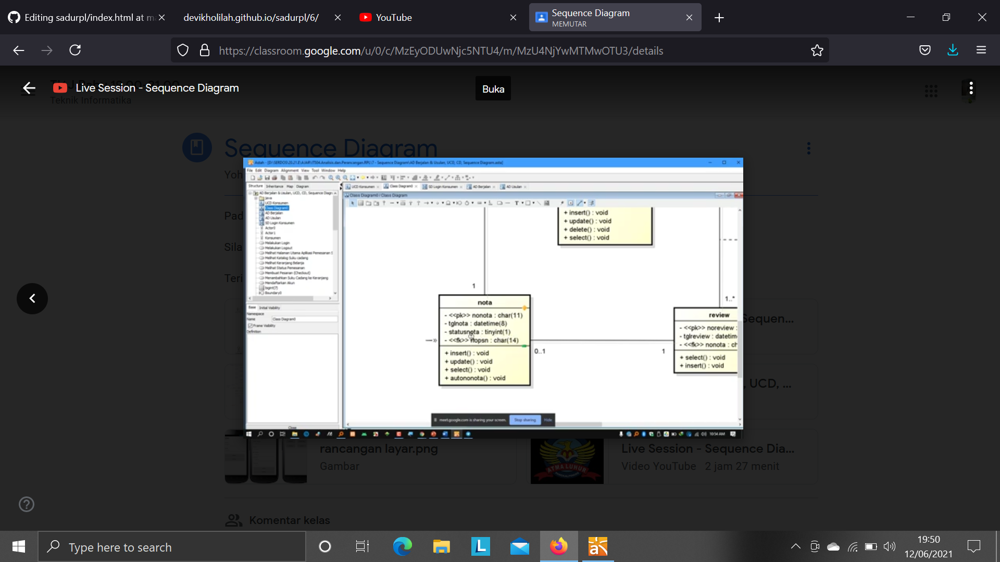

Nim : 1811500057
Nama : Devi Kholilah
Kelompok : TI6J
Berikut adalah hasil saduran saya :
1. Mengingatkan atau membuat kembali cara mengisi kehadiran dengan cara membuat file README.md serta file index.html untuk hasil menyadur.
2. Pada pertemuan 7 membahas mengenai sequence diagram,kisi kisi UTS.
3. Untuk membuat sequence diagram ini yaitu dengan menggunakan software Astah Community.
4. 
5. Hasil file projek astah Download.